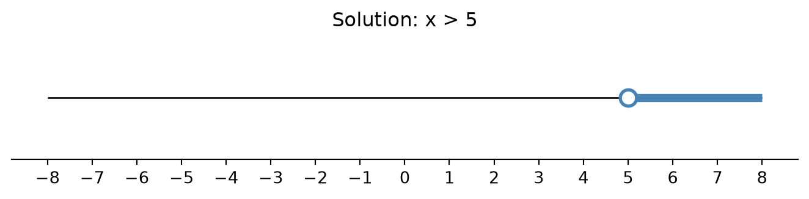
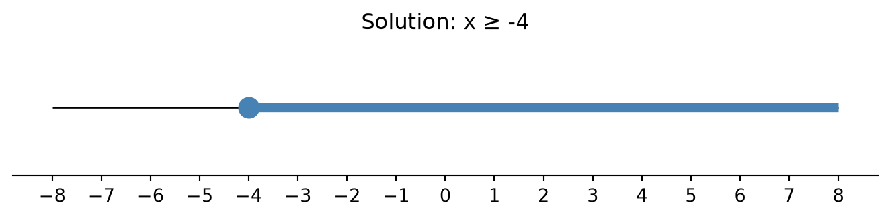
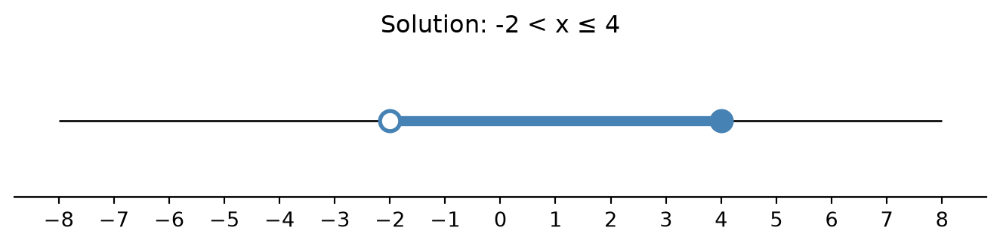
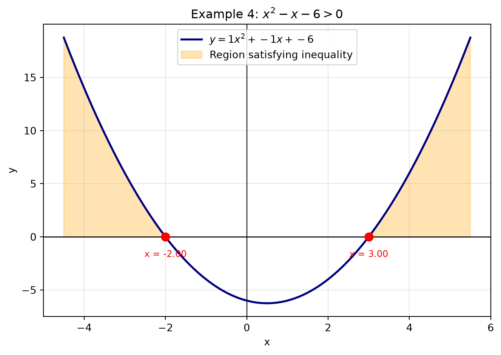
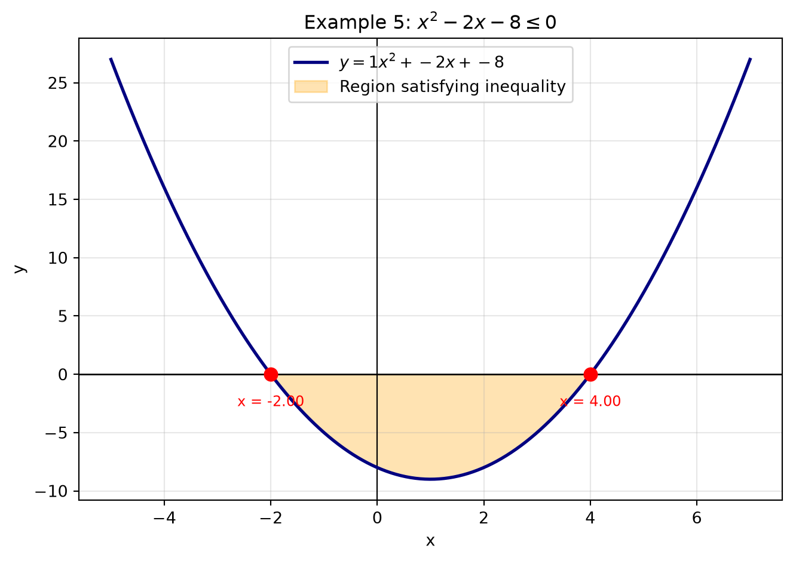
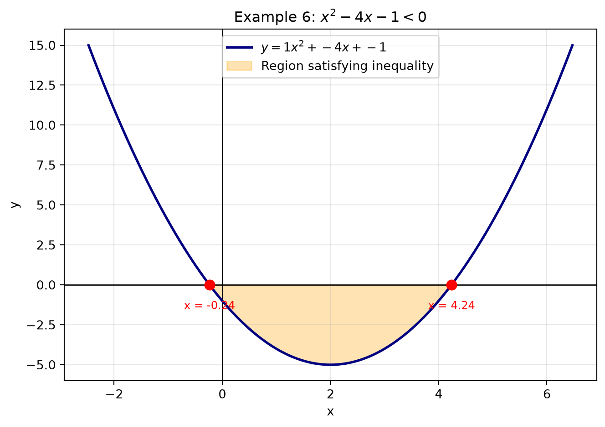

An equation like x + 3 = 7 has a single answer, x = 4. An inequality like x + 3 > 7 asks a different question: not “what one value works?” but “what is the entire range of values that works?”
Inequalities show up whenever you deal with limits, budgets, speed limits, safe temperature ranges, or feasible regions in optimization — which is exactly why they become central in Grade 11 topics like linear programming, calculus (domains, error bounds), and coordinate geometry.
There are four inequality symbols you need to be completely comfortable with:
Symbol
Meaning
Boundary point included?
>
greater than
No (open circle)
<
less than
No (open circle)
\geq
greater than or equal to
Yes (closed circle)
\leq
less than or equal to
Yes (closed circle)
Part 1: Linear Inequalities
A linear inequality in one variable has the form ax + b > 0 (or <, \geq, \leq), where the variable appears only to the power 1.
1.1 The Golden Rule
Solving a linear inequality works almost exactly like solving a linear equation — add, subtract, multiply, divide on both sides — with one critical exception:
If you multiply or divide both sides by a negative number, you must flip the direction of the inequality sign.
Why does this happen? Consider the true statement 2 < 5. If we multiply both sides by -1, we get -2 and -5. But -2 > -5, not -2 < -5. Multiplying by a negative number reverses the order on the number line, so the inequality sign must reverse too.
1.2 Worked Example 1 — Basic Linear Inequality
Solve 3x - 7 > 8.
\begin{aligned}
3x - 7 &> 8 \\
3x &> 15 \quad \text{(added 7 to both sides)} \\
x &> 5 \quad \text{(divided by 3, positive, no flip)}
\end{aligned}
Solution:x > 5, or in interval notation, x \in (5, \infty).
1.3 Worked Example 2 — The Sign-Flip Case
Solve -2x + 6 \leq 14.
\begin{aligned}
-2x + 6 &\leq 14 \\
-2x &\leq 8 \\
x &\geq -4 \quad \text{(divided by } -2 \text{, so the sign flipped from } \leq \text{ to } \geq \text{)}
\end{aligned}
Solution:x \geq -4, or x \in [-4, \infty).
1.4 Worked Example 3 — Compound (Double) Inequality
Solve -3 < 2x + 1 \leq 9.
Treat this as one inequality with three parts — do the same operation to all three:
\begin{aligned}
-3 < \ &2x + 1 \leq 9 \\
-4 < \ &2x \leq 8 \quad \text{(subtracted 1 from all parts)} \\
-2 < \ &x \leq 4 \quad \text{(divided all parts by 2)}
\end{aligned}
Solution:x \in (-2, 4].
1.5 Visualizing on a Number Line
Code
import matplotlib.pyplot as pltimport numpy as npdef plot_number_line(intervals, title, xlim=(-8, 8)):""" intervals: list of tuples (start, end, start_closed, end_closed) Use None for -inf / +inf ends. """ fig, ax = plt.subplots(figsize=(7, 1.8)) ax.hlines(0, xlim[0], xlim[1], color='black', linewidth=1)for start, end, start_closed, end_closed in intervals: left = xlim[0] if start isNoneelse start right = xlim[1] if end isNoneelse end ax.hlines(0, left, right, color='steelblue', linewidth=5)if start isnotNone: ax.plot(start, 0, 'o', color='steelblue', markerfacecolor='steelblue'if start_closed else'white', markersize=10, markeredgewidth=2)if end isnotNone: ax.plot(end, 0, 'o', color='steelblue', markerfacecolor='steelblue'if end_closed else'white', markersize=10, markeredgewidth=2) ax.set_xticks(range(xlim[0], xlim[1] +1)) ax.set_yticks([]) ax.set_ylim(-1, 1) ax.set_title(title)for spine in ['top', 'right', 'left']: ax.spines[spine].set_visible(False) plt.tight_layout() plt.show()# Example 1: x > 5plot_number_line([(5, None, False, False)], "Solution: x > 5")# Example 2: x >= -4plot_number_line([(-4, None, True, False)], "Solution: x ≥ -4")# Example 3: -2 < x <= 4plot_number_line([(-2, 4, False, True)], "Solution: -2 < x ≤ 4")



Notice the open circle for strict inequalities (>, <) and the filled circle for inclusive ones (\geq, \leq).
1.6 Practice Problems (Linear)
Solve 5x + 2 < 17.
Solve -4x - 3 \geq 9.
Solve 6 \leq 3x - 3 < 15.
A cab charges a base fare of ₹50 plus ₹12 per km. If a passenger wants the total fare to stay under ₹200, how many kilometres can they travel? (Set up and solve an inequality.)
(Answers: 1) x < 3 2) x \leq -3 3) 3 \leq x < 6 4) Let d = distance: 50 + 12d < 200 \Rightarrow d < 12.5 km.)
Part 2: Quadratic Inequalities
A quadratic inequality has the form ax^2 + bx + c > 0 (or <, \geq, \leq), where a \neq 0.
Unlike linear inequalities, you cannot just isolate x by dividing — quadratics can change sign more than once. The reliable method has three steps:
2.1 The Three-Step Method
Rearrange so one side is 0: ax^2 + bx + c \; \square \; 0.
Find the roots of the corresponding equation ax^2 + bx + c = 0 (by factoring, quadratic formula, or completing the square). These roots are the critical points — they split the number line into intervals.
Test each interval (pick any convenient value inside it) to see whether the quadratic is positive or negative there, then select the intervals matching your inequality sign.
A quick shortcut: since a quadratic’s graph is a parabola, the sign pattern is easy to predict: - If a > 0 (opens upward): the expression is negative between the roots and positive outside them. - If a < 0 (opens downward): the expression is positive between the roots and negative outside them.
2.2 Worked Example 4 — Factorable Quadratic
Solve x^2 - x - 6 > 0.
Step 1: Already in the form \square > 0.
Step 2: Factor: x^2 - x - 6 = (x-3)(x+2). Roots are x = 3 and x = -2.
Step 3: These roots split the number line into three intervals: (-\infty, -2), (-2, 3), (3, \infty).
Interval
Test point
(x-3)(x+2)
Sign
(-\infty, -2)
x = -3
(-6)(-1) = 6
+
(-2, 3)
x = 0
(-3)(2) = -6
-
(3, \infty)
x = 4
(1)(6) = 6
+
Since we want > 0 (positive), and a = 1 > 0 (upward parabola, positive outside the roots — matches our table):
Solution:x < -2 or x > 3, i.e. x \in (-\infty, -2) \cup (3, \infty).
2.3 Worked Example 5 — Inclusive Inequality, Downward Parabola
Solve -x^2 + 2x + 8 \geq 0.
Step 1: Multiply both sides by -1 (remember: flip the sign!): x^2 - 2x - 8 \leq 0.
Step 2: Factor: x^2 - 2x - 8 = (x-4)(x+2). Roots: x = 4, x = -2.
Step 3: Here a = 1 > 0, and we want \leq 0, which is the region between the roots (inclusive, since \leq).
Solution:-2 \leq x \leq 4, i.e. x \in [-2, 4].
2.4 Worked Example 6 — Using the Quadratic Formula (Non-Factorable)
Solve x^2 - 4x - 1 < 0.
This doesn’t factor nicely, so use the quadratic formula x = \dfrac{-b \pm \sqrt{b^2 - 4ac}}{2a} with a=1, b=-4, c=-1:
So roots are approximately x \approx -0.236 and x \approx 4.236. Since a = 1 > 0 and we want < 0 (between the roots):
Solution:2 - \sqrt{5} < x < 2 + \sqrt{5}.
2.5 Visualizing Quadratic Inequalities with the Parabola
Graphing the parabola makes the “positive/negative” regions completely visual: wherever the curve is above the x-axis, the expression is positive; wherever it’s below, it’s negative.
Code
import matplotlib.pyplot as pltimport numpy as npdef plot_quadratic_inequality(a, b, c, condition, title):""" Plots y = ax^2 + bx + c, shades the region satisfying the condition, and marks the roots. condition: one of '>', '<', '>=', '<=' """ roots = np.roots([a, b, c]) roots = np.sort(roots.real) span =max(4, (roots[-1] - roots[0]) *1.5) iflen(roots) ==2else6 x = np.linspace(roots[0] - span/3iflen(roots) else-6, roots[-1] + span/3iflen(roots) else6, 400) y = a * x**2+ b * x + c fig, ax = plt.subplots(figsize=(7, 5)) ax.axhline(0, color='black', linewidth=1) ax.axvline(0, color='black', linewidth=0.8) ax.plot(x, y, color='navy', linewidth=2, label=f"$y = {a}x^2 + {b:+}x + {c:+}$")# Shade the region satisfying the inequalityif condition in ('>', '>='): mask = y >=0if condition =='>='else y >0else: mask = y <=0if condition =='<='else y <0 ax.fill_between(x, y, 0, where=mask, color='orange', alpha=0.3, label="Region satisfying inequality")for r in roots: ax.plot(r, 0, 'o', color='red', markersize=8, zorder=5) ax.annotate(f"x = {r:.2f}", (r, 0), textcoords="offset points", xytext=(0, -20), ha='center', fontsize=9, color='red') ax.set_title(title) ax.set_xlabel("x") ax.set_ylabel("y") ax.legend(loc='upper center') ax.grid(alpha=0.3) plt.tight_layout() plt.show()# Example 4: x^2 - x - 6 > 0plot_quadratic_inequality(1, -1, -6, '>', "Example 4: $x^2 - x - 6 > 0$")# Example 5 (rearranged form): x^2 - 2x - 8 <= 0plot_quadratic_inequality(1, -2, -8, '<=', "Example 5: $x^2 - 2x - 8 \\leq 0$")# Example 6: x^2 - 4x - 1 < 0plot_quadratic_inequality(1, -4, -1, '<', "Example 6: $x^2 - 4x - 1 < 0$")



The shaded orange region shows exactly where the curve satisfies the inequality — compare it directly with the algebraic answers above.
2.6 A General-Purpose Solver (Optional Extension)
For students comfortable with a bit more code, here’s a small function that solves any quadratic inequality symbolically using sympy, useful for checking your hand-worked answers.
Code
import sympy as spx = sp.symbols('x', real=True)def solve_quadratic_inequality(a, b, c, relation):""" relation: one of sp.StrictGreaterThan, sp.GreaterThan, sp.StrictLessThan, sp.LessThan — or simply use sp.solve_univariate_inequality directly as shown below. """ expr = a*x**2+ b*x + c ineq = relation(expr, 0) solution = sp.solve_univariate_inequality(ineq, x, relational=False)return solution# Check Example 4: x^2 - x - 6 > 0print("Example 4:", solve_quadratic_inequality(1, -1, -6, sp.StrictGreaterThan))# Check Example 5: x^2 - 2x - 8 <= 0print("Example 5:", solve_quadratic_inequality(1, -2, -8, sp.LessThan))# Check Example 6: x^2 - 4x - 1 < 0print("Example 6:", solve_quadratic_inequality(1, -4, -1, sp.StrictLessThan))
Example 4: Union(Interval.open(-oo, -2), Interval.open(3, oo))
Example 5: Interval(-2, 4)
Example 6: Interval.open(2 - sqrt(5), 2 + sqrt(5))
2.7 Practice Problems (Quadratic)
Solve x^2 - 5x + 6 \leq 0.
Solve x^2 + 3x - 10 > 0.
Solve 2x^2 - 7x + 3 \geq 0.
Solve x^2 + 4 < 4x(hint: rearrange first).
A ball is thrown upward; its height in metres after t seconds is h(t) = -5t^2 + 20t. For how long is the ball at least 15 m above the ground? (Solve -5t^2 + 20t \geq 15.)
(Answers: 1) 2 \leq x \leq 3 2) x < -5 or x > 2 3) x \leq 1 or x \geq 3 4) x^2 - 4x + 4 < 0 \Rightarrow (x-2)^2 < 0, which has no solution since a square can’t be negative — good discussion point! 5) t^2 - 4t + 3 \leq 0 \Rightarrow 1 \leq t \leq 3, so the ball is at least 15 m high for 2 seconds.)
Part 3: Key Takeaways
Linear inequalities:
Solve like an equation, but flip the sign when multiplying/dividing by a negative number.
Solutions are typically a single ray or interval on the number line.
Quadratic inequalities:
Move everything to one side so it’s compared to 0.
Find the roots — they are the boundary (“critical”) points.
Use a sign table or the parabola’s shape (a>0: positive outside roots, negative between; a<0: opposite) to pick the correct interval(s).
Always double check special cases: no real roots (expression never changes sign) or a repeated root (touches zero but doesn’t cross).
Looking Ahead to Grade 11
These skills feed directly into:
Systems of inequalities & linear programming (feasible regions, optimization)
Domain restrictions for functions like \sqrt{f(x)} or \dfrac{1}{f(x)}, which require f(x) \geq 0 or f(x) \neq 0
Rational and higher-degree inequalities, which extend this same critical-point method to more complex expressions
Mastering the sign-analysis method here will make all of these topics far more manageable.